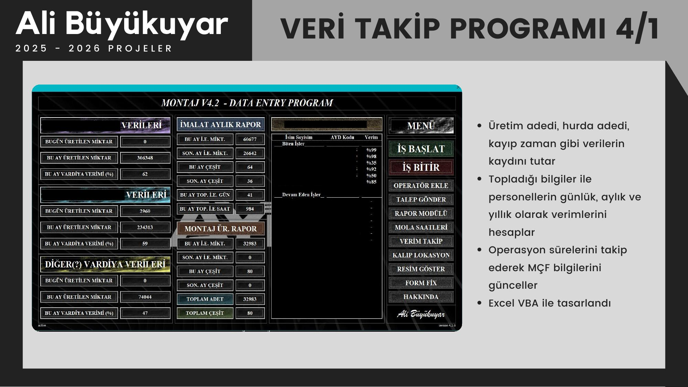
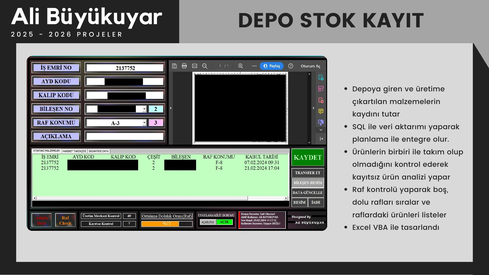
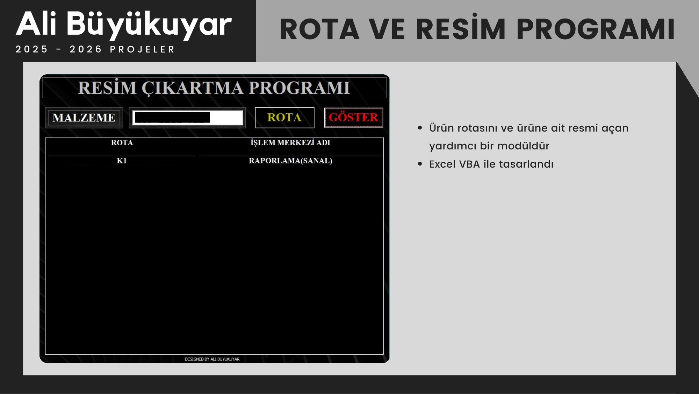
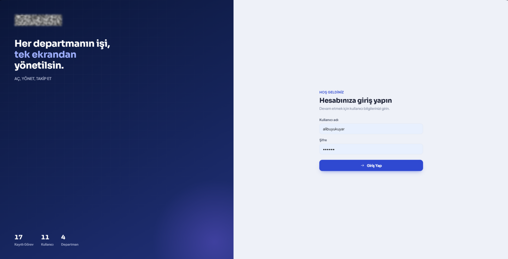
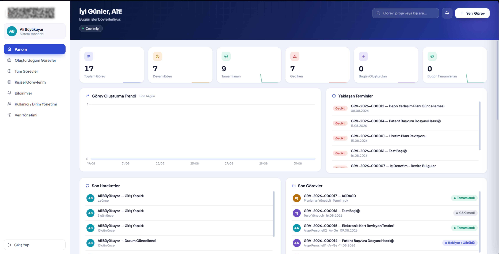
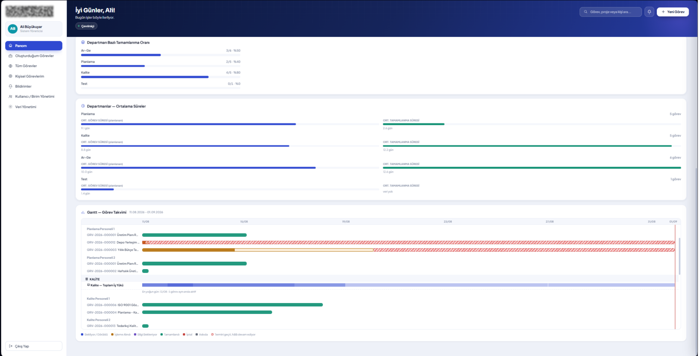

ALI
BÜYÜKUYAR
2021'den bu yana üretim, kalite ve planlama verisini yönetim raporlarına dönüştürüyor; Excel VBA ve SQL tabanlı sistemlerle manuel iş yükünü ölçülebilir şekilde azaltıyor.
Ham veriyi karar destek raporlarına, süreç verimsizliklerini ise ölçülebilir maliyet kazancına dönüştürüyorum.
- Günlük mali işlemlerin kaydı, fatura takibi ve arşivleme süreçlerinde muhasebe ekibine veri düzenleme ve raporlama desteği verdi.
- SQL destekli Excel VBA uygulamaları geliştirerek depo, sevkiyat ve üretim veri süreçlerini otomatikleştirdi (5 uçtan uca proje).
- Planlama, üretim, depo ve sevkiyat birimleri arasında gerçek zamanlı veri akışı kurarak birimler arası koordinasyonu iyileştirdi.
- Personel üretim kayıtlarından performans, üretim adedi ve kayıp zaman analizleri üreterek saha ile planlama arasında karar destek sağladı.
- Üretim süreçlerinde kalite kriterlerine uygunluğu denetleyerek uygunsuzlukları analiz etti, kök neden bazlı çözüm önerileri geliştirdi.
- Düzeltici/önleyici faaliyet (DÖF) süreçlerini koordine etti; kalite yönetim sistemi kapsamında düzenli performans raporlaması yaptı.
- Firma genelindeki maliyet analizlerini düzenli periyotlarla yürüterek yönetime sunulabilir rapor ve sunum formatına dönüştürdü.
- Hesaplama, veri işleme ve raporlama adımlarını uçtan uca Excel VBA ile otomatikleştirerek analiz süresini kısalttı, hata payını azalttı.
- Üretim ve operasyon verilerini analiz ederek yönetime yönelik KPI ve performans raporları hazırlıyor, karar destek süreçlerine doğrudan katkı sağlıyor.
- Yapay zekâ destekli geliştirme araçlarını kullanarak raporlama odaklı, dijital ve web tabanlı uygulamalar geliştiriyor; süreçleri tekil bir dijital panel altında birleştiriyor.
- SQL tabanlı veri altyapıları ve otomasyon çözümleriyle manuel raporlama süreçlerini dijitalleştirerek hız ve doğruluk kazandırıyor.
Üzerine gelin — kullanım alanı ve ilgili projeleri görün.
2022'den bu yana sahada fiilen kullanılan 10 sistem — dosya numarası, firma ve tarihiyle birlikte.
KURUMSAL GİZLİLİK NEDENİYLE
HENÜZ YAYINLANMADI
Gerçek zamanlı KPI paneli.
Yapay zekâ destekli geliştirme araçlarıyla, gerçek zamanlı OEE, MÇF, hata oranı ve teslimat riski KPI'larını tek bir dijital panelde birleştiren, web tabanlı bir yönetici raporlama uygulaması üzerinde çalışıyor.

Veritabanı yönetim aracı.
SQL (.ACCDB) formatlı veritabanlarını Excel VBA üzerinden görüntüleyip düzenleyebilen bir veri yönetim aracı geliştirdi. Tablo, sütun ve satır seviyesinde CRUD işlemlerini tek arayüzden yönetilebilir hale getirdi.

Vardiya bazlı veri giriş programları.
Farklı üretim hatları için uyarlanabilen, vardiya bazlı üretim, hurda ve kayıp zaman verilerini kayıt altına alan bir dizi VBA tabanlı veri giriş programı tasarladı. Sistemler personel verimliliğini günlük/aylık/yıllık bazda hesaplıyor, operasyon sürelerini takip ederek MÇF bilgilerini güncelliyor ve yöneticiler için filtrelenebilir, Excel'e aktarılabilir detaylı rapor modülleri sunuyor.

Gerçek zamanlı stok senkronizasyonu.
Depoya giren ve üretime çıkan malzemelerin kaydını tutan, SQL ile planlama sistemiyle anlık senkronize çalışan bir stok yönetim uygulaması geliştirdi. Sistem raf doluluk oranlarını, kayıtsız ürün analizini ve teknik resim/iş emri kontrolünü otomatikleştirdi.

Otomatik belge derleme.
Planlamanın oluşturduğu iş emirlerini bileşen ve operasyon bilgileriyle birlikte otomatik derleyip depo birimi için baskıya hazır hale getiren bir uygulama geliştirdi. Sistem ilgili teknik resimleri sunucudan çekip belgeye otomatik yerleştiriyor.

Tek ekrandan sorgulama modülü.
Ürün rotasını ve teknik resmini tek ekrandan sorgulanabilir hale getiren, ana sistemlere yardımcı modül olarak çalışan bir uygulama geliştirdi.

Üç parçalı sevkiyat sistemi.
Sevkiyat sürecini uçtan uca dijitalleştiren üç parçalı bir sistem kuruldu: sevk kayıtlarını SQL üzerinden anlık işleyen Sevk Programı, oluşan hataları detaylı kodlama bilgisiyle yöneticiye e-posta olarak bildiren otomatik Log Modülü ve SQL kayıtlarını anlık yansıtan bir Takip Programı. Bu üçlü yapı, sevkiyat verisini gerçek zamanlı ve izlenebilir hale getirdi.

Görev ve devamsızlık paneli.
Birim personelinin görev ve devamsızlık takibini yöneten bir kalite kontrol paneli geliştirildi. Panel; görev oluşturma, aciliyet etiketleme, durum takibi ve devamsızlık kayıtlarını tek arayüzde topluyor.

Bağımsız masaüstü uygulaması.
Bir üretim firması için satış, stok ve çek/senet süreçlerini uçtan uca yöneten bağımsız bir masaüstü uygulaması geliştirdi. Sistem çoklu döviz kuru desteği, firma bazlı satış kaydı ve alacak/verecek bakiye raporlaması sunuyor.

Departman bazlı maliyet raporlama.
Şirket içi birimlerden gelen hurda verilerini departman, hat ve hata kodu bazında analiz eden, otomatik e-posta bildirimiyle ilgili sorumlulara ve yönetime anlık raporlama yapan bir sistem geliştirildi. Program ham veriyi filtrelenebilir grafiklere dönüştürüyor, hata kodlarına göre otomatik yorum üretiyor ve ürün/hurda tarihçesini otomatik oluşturuyor. Kurulan karantina alanı sayesinde hurdanın yaklaşık %30'u geri dönüştürülerek firmaya doğrudan maliyet kazancı sağlandı.
Sahadan yönetim raporuna giden yol — her projede tekrarlanan aynı boru hattı.
ÜST PROJE
/ İŞ-GÖREV TAKİP
Bu proje ile iş yerinde her departmanın görev akışı, yoğunluğu(Gantt) olarak takip edilmektedir. Söz uçar, Proje kalır :)

EKRAN 01
EKRAN 02
03 04
04 05
05 06
06 07
07bağlantı?